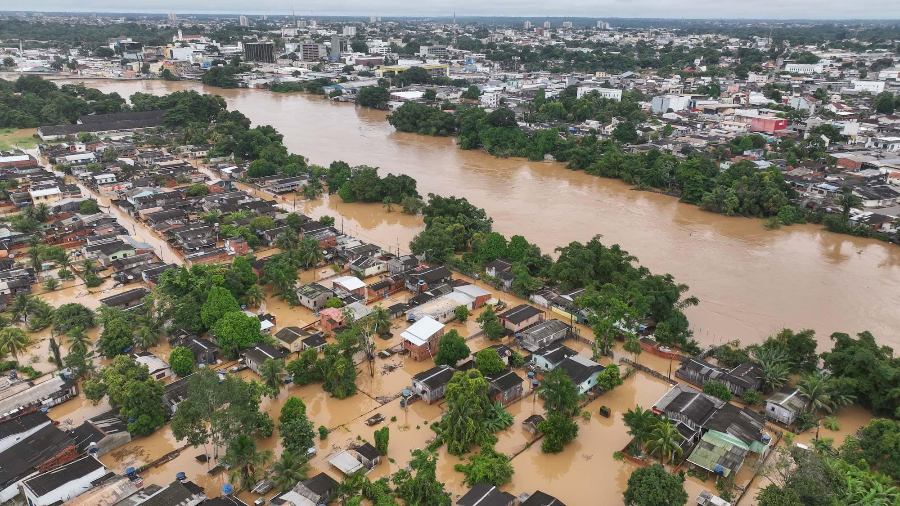

A ponte entre a necessidade e a ajuda.
Uma solução completa, que transforma solidariedade em ação concreta.
Saiba MaisO que estamos dispostos a resolver?
A cada nova enchente, não é só a água que sobe. Sobe o desespero, a insegurança, e surge a dúvida: e agora, quem pode me ajudar?
De 1991 a 2022, mais de 110 milhões de pessoas foram afetadas por inundações no Brasil. Somente em 2023, foram mais de 3,3 milhões de brasileiros impactados. E não para por aí: em 2024, as chuvas no Rio Grande do Sul deixaram cidades inteiras submersas. O problema não é só a água. É o caos que vem depois. Abrigos lotados, falta de comunicação, doações desorganizadas, voluntários sem direção. É um sistema que se desfaz quando ele mais é necessário.
Nossa Solução
Foi por isso que criamos o 'Resgate Solidário'. Uma plataforma que conecta quem precisa de ajuda com quem pode ajudar
Eficiência
Interface clara e fácil de usar, focada na experiência do usuário.
Acessibilidade
Acessível em qualquer dispositivo, com função intuitivas.
Agilidade
Utilizamos as melhores tecnologias para garantir performance e segurança.
Vídeo Pitch da Ideia
Assista ao nosso vídeo para entender rapidamente como nossa solução pode te ajudar.